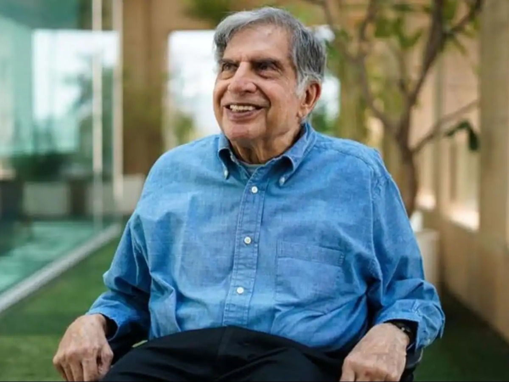
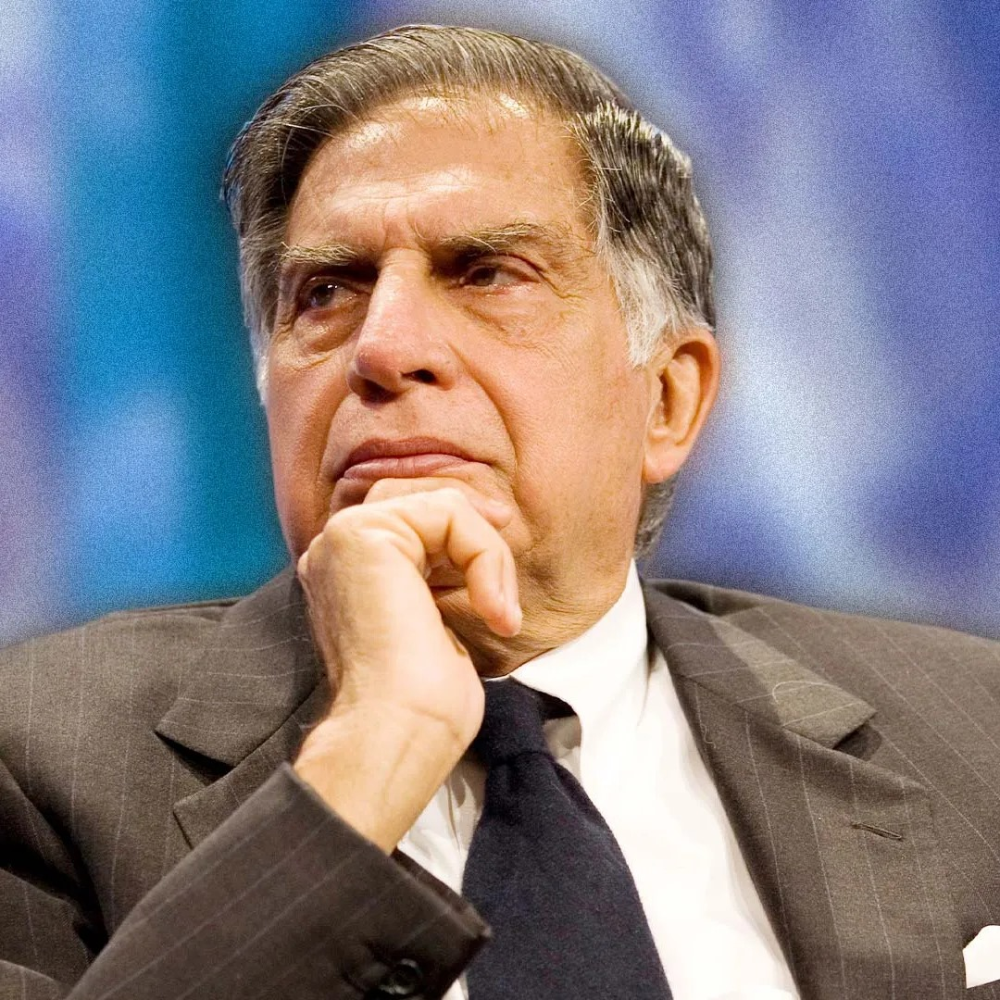
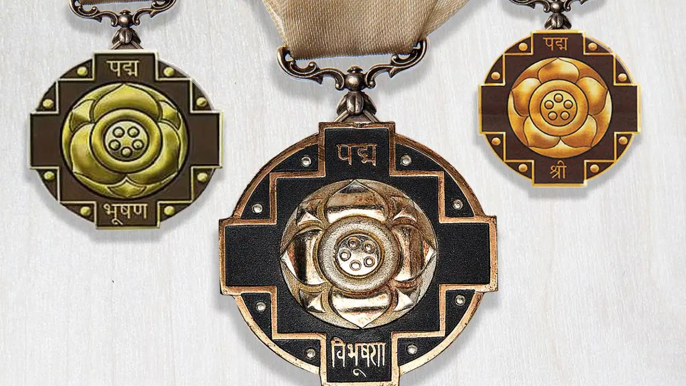

Ratan Tata, born on December 28, 1937, is an Indian industrialist and former chairman of Tata Sons. He is the scion of the Tata family and played a crucial role in transforming the Tata Group into a global conglomerate. Ratan Tata served as the Chairman of Tata Sons from 1991 to 2012, overseeing the expansion and diversification of the group's businesses.


About
Born:-28 December 1937 (age 86)
Lakhanmau, Mainpuri,British India.
Parent:-Naval Tata (father)
Relatives:- Tata Family.
Education
Harvard Business School
He completed his undergraduate studies in 1962. Later, he pursued a management program at Harvard Business School.

Awards
Padma Bhushan (2000)
Grand Cordon of the Order of the Rising Sun
Lifetime Achievement Award
HERE IS WHAT WE NEED TO KNOW ABOUT SIR RATAN TATA
Transformed Tata Group into a global conglomerate Led strategic acquisitions, including Jaguar Land Rover and Corus Group.
Philanthropy:Active involvement in Tata Trusts' social and community development initiatives
Ratan Tata is considered an influential figure in the Indian business community, and his leadership has left a lasting impact on the Tata Group's legacy.
Under his leadership, the Tata Group acquired several key companies, including the global luxury carmaker Jaguar Land Rover and the Anglo-Dutch steelmaker Corus Group.
Tata is widely admired for his strategic vision, ethical business practices, and commitment to corporate social responsibility.
Beyond business, Ratan Tata is known for his philanthropic efforts. The Tata Trusts, under his guidance, have been actively involved in various social and community development initiatives.
Ratan Tata is considered an influential figure in the Indian business community, and his leadership has left a lasting impact on the Tata Group's legacy.
Even after stepping down as Chairman, he continues to be involved in various business and philanthropic endeavors.
He is the scion of the Tata family and played a crucial role in transforming the Tata Group into a global conglomerate.